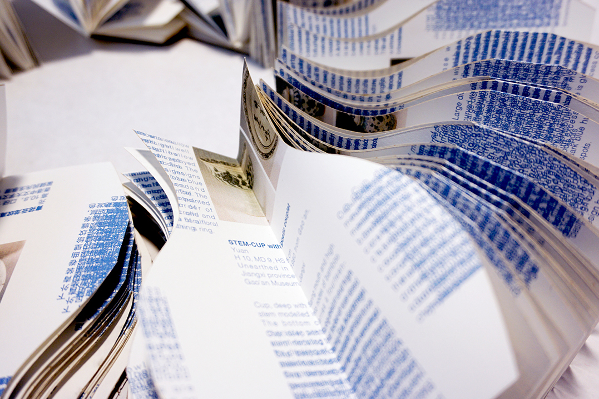

Blue and White history book is a book art piece I made it in fall 2018. Blue and White porcelain are some of the great histories in China. I believe the publication is a container. The production of these porcelains is the container of Chinese history. They include history in China. I read through the book “Yuan And Ming Blue And White From Jiangxi” and document a part of them into my books. The book divides into two little pieces. One is in Chinese, and the other is in English. It means the fusion of culture. Words are overlapping in the book. The words from history overlap the words from nowadays.
Blue and White history book, book art design, 2018, awarded by The one show: The young ones student awards 2019 Merit Award
Two parts of book, 13.7cm x 6cm for each, one part is Chinese version, one part is English version, 240 pages (total), inject print and laser cut


